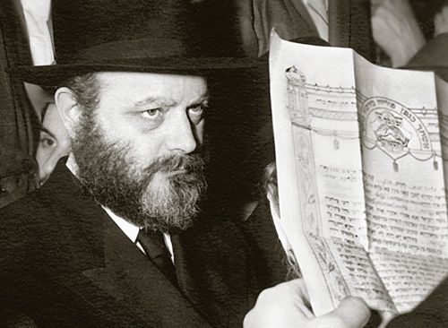

The Royal Wedding
Excerpts from Nisu’ei HaNesiim. * Most of the material is not well known and is presented for Yud-Dalet Kislev, anniversary of the Rebbe and Rebbetzin.

THE SHIDDUCH
SHIDDUCH SUGGESTION BEFORE HIS BAR MITZVA
The Rebbe once said: When I was 11 years old, a shadchan came to our house and presented a shidduch suggestion for me to my father. My father said I wasn’t even bar mitzva yet. However, the shadchan said that although I wasn’t yet bar mitzva, “My daughter is about to get married and I need the money to marry her off. That is why I want to complete this shidduch.”
That is the most direct account we have regarding a shidduch for the Rebbe, but it is almost certain that this was not the shidduch that actually came to fruition years later.
THE SHADCHAN – THE FIRST SHLIACH MITZVA
About a year after the wedding, in a letter that R’ Eliyahu Chaim Altheus sent from Riga to the Rebbe Rayatz, who was in the United States at the time, he wrote about the special atmosphere during Tishrei 5690 that he spent with the Rebbe Rayatz’s son-in-law (the Rebbe), who had remained in Riga. In his uniquely emotive style he also references the shidduch that he was personally involved in:
“I thank G-d for His kindness that He did with me to repay me in accordance with my deeds. I was the first, who was granted the merit incommensurate to my deeds, in that the Rebbe revealed to me in yechidus in his room during the summer of 5683/1923, what was hidden in his pure heart and primordial thought, that he wanted to give his dear and precious daughter (Rebbetzin Chaya Mushka) to the man who I will speak about now.
“And I was the only person from Anash, the mekuravim, who saw his [referring to the Rebbe Rayatz in the third person – Ed.] toil, his pain, the pouring of his blood like water, his great humility compelled and willing, his great patience that he demonstrated both openly and secretly, throughout the five years [from when the shidduch came up to the actual wedding – Ed.], during which his head, the head leader of the Jewish people, was constantly between two blazing mountains of fire.
“I was the first shliach mitzva and I was chosen to make the opening to bring him [the prospective groom to be – Ed.] from Yekaterinoslav to Kislovodsk [where the Rebbe Rayatz was summering in 1923 – Ed.] I was a simple servant who did as I was told.
“In the merit of simple faith, now as well I am the first who merited seeing the building of an everlasting edifice. I’ve seen wonders now too; that which I never imagined or conceived of, Hashem has shown me this time.”
L’CHAIM EVERY NIGHT
Mrs. Bas-Sheva Altheus (the daughter of R’ Eliyahu Chaim) told about the Rebbe’s vort:
“I remember the Rebbe’s vort that took place in Leningrad at the home of the Rebbe Rayatz. After he became a chassan, I remember that they would say l’chaim every night.”
THE KALLA AT THE OHEL
On 15 Elul 5687/1927, two months after his release from jail and a few weeks before leaving the country (Russia) forever, the Rebbe Rayatz traveled to the Ohel of his father in Rostov. R’ Refael Nachman (Folye) Kahan related:
“His daughter Rebbetzin Chaya Mushka accompanied him to Rostov, to the Ohel of the Rebbe Rashab. The Chassidim then discussed why she specifically was the one to accompany him; it was for her sake – it was before her wedding, since it was already known then that the Rebbe Shlita was destined to be her chassan.”
FROM SHIDDUCHIM TO NISU’IN
Years before the wedding, the Rebbe Rayatz opened up the royal treasures for his future son-in-law. His son-in-law took an active role in communal work and the holy wars waged by the Rebbe Rayatz. What follows are some episodes from that period:
THE “MINISTER OF ERUDITION” REVEALS THE SECRET OF THE MAGEN DAVID
A great scholar and philosopher by the name of Professor Borotchenko asked the Rebbe Rayatz to explain the shape of the Magen David according to kabbala. The Rebbe said, “I will call for my Minister of Erudition,” referring to his future son-in-law, who was asked to come for this purpose from Yekaterinoslav to Leningrad and to put together a detailed response.
The chassan sat in Leningrad for three months in the course of which he wrote an extensive treatise on the Magen David according to Nigleh, Kabbala and with additional points from the science of astronomy.
His mother said that her son traveled to Leningrad several times for this purpose and said she remembered the thick math book that was in her son’s room for his work in writing a lengthy explanation about the Magen Dovid.
This is how the friend of Beis Rebbi, R’ Eliyahu Chaim Altheus, described the events in a letter written after the Rebbe Rayatz’s arrest:
“The night of Shmini Atzeres 5686/1925, before hakafos, a gentile man came to the Rebbe Rayatz’s house and said that Professor Borotchenko of Moscow wanted an audience … For a long time, we mekuravim did not know the professor’s purpose and what he wanted of the Rebbe. Afterward, we learned that he, Borotchenko, was involved in the study of hidden wisdom which is also based on mathematics, to reveal that which is hidden, to know the future, and that this has some connection with kabbala, l’havdil between the sacred and the mundane …
“From the Rebbe’s response we learned only this, that … the Rebbe is ready to assist him in this matter, but without giving up his currently precious time, and he cannot translate from language to language. When his relative, R’ M. M. Schneersohn, will soon come from Yekaterinoslav, he will ask him to find what Borotchenko needs from the kabbala works and to translate it into Russian and send it to him to the address that he provides. Because R’ M. M. knows the language of kabbala well, and can translate into another language, he knows … In the winter he came to the Rebbe another time and the Rebbe introduced him to R’ M. M. Throughout the year, there was correspondence between them as well as visits at Borotchenko’s home.”
SEVEN MONTHS IN HIDING
The rav of Haifa, R’ She’or Yashuv Cohen, related:
My relationship with the Rebbe and Chabad began with a family matter … I heard the following details from the Rebbe himself several times when I had yechidus. In the period after the shidduch was made between the Rebbe and the Rebbetzin, the daughter of the Rebbe Rayatz, the Bolsheviks began looking for him. By the way, when the Rebbe said that this was during the time after he had become engaged, he said, “This period in a person’s life is a preparation for all of life.” He went to hide in Luga in the home of my grandfather R’ Chanoch Henoch Hetkin for a long time, about six or seven months.
During that time, there was a problem in arranging official papers for the Rebbe and I know that my grandfather was involved in this too. He went to the capitol city and arranged what needed to be arranged.
IN THE SIGHTS OF THE GPU
A resident of Yekaterinoslav by the name of Aidel Yankerevitz (Chandler) related:
The secret police (GPU) once came to the Rebbe’s parents’ home for the express purpose of arresting the Rebbe. The police failed in their task because the Rebbe hid with the Rosen family who lived near his parents. From there, he went to the Chandler family where he hid for two days and even slept there for two nights.
Then the Rebbe fled to Leningrad, was caught, but managed to extricate himself.
THE KING’S SCRIBE
At the end of Tishrei 5688/1927, the Rebbe Rayatz and his household left Russia for Riga. A few days later, his future son-in-law went there too. At that time, the Rebbe served as the Rebbe Rayatz’s secretary. Among the Rebbe Rayatz’s letters from that time, we find some letters that were written in the Rebbe’s handwriting and signed by his father-in-law. The earliest such letter that has been publicized to date was addressed to R’ Moshe Goldschmidt, shochet and melamed in Chevron. It was written in Riga on 13 Cheshvan 5688, just two weeks after the Rebbe left Russia.
PREPARING FOR THE WEDDING
LIKE THE OPENHANDED SCHNEERSOHNS
In the period preceding the wedding, the mechutanim sent letters to one another about wedding-related matters. Regarding the division of wedding expenses and how the couple would be set up after the wedding, we read in a letter from the Rebbe Rayatz dated 27 Sivan 5688 to R’ Levi Yitzchok:
… The gifts you need to give the kalla, I ask that they be in line with the trait of the generous Schneersohns (because the world says that there are two types in our family, openhanded and closefisted, and in this regard, I would like us to be among the openhanded ones).
GOOD WISHES FOR THE NEW YEAR TO THE FUTURE CHASSAN
In a letter that the Rebbe Rayatz sent to his future son-in-law on 17 Elul 5688 he wrote: The purpose of my writing this is to send you regards and manifold blessings … during these days of mercy, may Hashem have mercy on His people and His flock, from soul to flesh. And I, who am designated to be your father-in-law, who seeks your welfare, bless you with a k’siva va’chasima tova.
INVITATIONS
The date for the wedding was set in the middle of Cheshvan for 14 Kislev, and the location would be in the courtyard of the Yeshiva Tomchei T’mimim Lubavitch in Warsaw.
Setting the time and place only became possible after it had been ascertained that the mechutan, R’ Levi Yitzchok, would not be able to attend the wedding. The source of the reason for the delay of the wedding is in a letter of the Rebbe Rayatz, dated 3 Teves 5689, which he sent to R’ Chaim Shneur Zalman Kramer. In it he wrote:
… We too did not know precisely the date of the wedding, L’ mazal Tov, for we waited – perhaps the government authorities would allow my mechutan, R’ Levi Yitzchok, to travel to his son’s wedding, my son-in-law, R’ … but unfortunately, they did not grant him a visa and we decided a date through telegram correspondence with my mechutan … and then immediately announced it to all our friends.
The Rebbe Rayatz began sending letters and invitations to friends and acquaintances including distinguished rabbanim and famous Admurim, as well as to the Chassidic community.
On the top of the invitations the stated date was 16 Mar Cheshvan, even though some of the invitations had been sent out later than that. The reason for this is provided in a letter of the Rebbe Rayatz to R’ Menachem Mendel Alter, brother of the Imrei Emes of Gur, in which he writes (regarding the invitation being sent on 2 Kislev): “The date listed in the record book of sent mail for those sent on 2 Kislev says 16 Mar Cheshvan, because all the letters were dated the day the wedding date was set.”
LONGING TO SEE A GOOD FRIEND
Aside from the wedding invitation, many people received personal invitations from the Rebbe Rayatz. In one such letter, he wrote that although he would be sending a printed invitation, he did not want to wait until they were printed. He informed the person that he planned on arriving in Warsaw on Monday morning, having the chuppa on Tuesday, and returning to Riga on Wednesday. He said that if this friend and family could attend, he would ask them to do so, and how greatly he yearned to see him on this happy occasion.
HE TRAVELED TO THE WEDDING WRAPPED IN BLANKETS
R’ Yochanan Gordon’s children described their father’s trip to the Rebbe’s wedding:
“Our father went to the Rebbe Rayatz in Riga for Tishrei. Our father was the Baal Shacharis and R’ Mordechai Dubin davened Musaf.
“Our father did not have money to travel to Riga and he borrowed the money for the trip. In Kislev, when he received the invitation from the Rebbe Rayatz for the marriage of the Rebbe, he thought he would not be able to attend because he hadn’t paid back his debt from the trip he made in Tishrei.
“Our father suffered greatly from a chronic inflammation of the throat and when it would get really bad he was laid up in bed with a high fever. He became sick again in the winter of 5689, and the Chassid R’ Leib Sheinin came to visit him. As they spoke, each discovered that the other had received an invitation to the wedding of the Rebbe’s daughter. When our father heard that R’ Leib was planning on going to the wedding, he asked him: How are you going when you also borrowed money to travel for Rosh HaShana and haven’t paid it back yet? R’ Leib said: How can I not attend the wedding? There is no doubt that the Rebbe (Rashab) will be there too, and who knows who else.
“These words made a deep impression on our father and he decided on the spot that he also had to go. However, since he did not have even a cent, he suffered greatly and it bothered him tremendously. My mother sensed this and asked him what happened. When he told her the reason, she decided to make every effort so he could attend the wedding. She managed to obtain a loan and gave him the money so he could pay the cost of the trip. It was not an easy winter. Our father boarded the wagon wrapped in blankets and traveled ten kilometers in that manner until the train station. From there, he went to the wedding in Warsaw.”
LAST NIGHT WE MADE THE TANAIM
The Tanaim were arranged on 6 Kislev 5689 with only a few people present. The kalla herself wasn’t there (although she and her mother were already in Warsaw). After arranging the Tanaim, the Rebbe Rayatz quickly reported to his daughter in a letter that he sent in the morning:
To my dear daughter Chaya Mushka,
Thanks to Hashem for life and peace, may it ever be so.
Mazal Tov to you, dear daughter, Mazal Tov! Last night we held the Tanaim in a good and successful time in the presence of just a few people. May Hashem help that this be with mazal in all aspects, materially and spiritually, and that the wedding take place on the designated date in a good and successful time with much happiness and nachas in all respects, joy in everything, and may Hashem help you and give you pure, clear, illuminated understanding to understand the pure and fine truth, as is the desire of our great and holy ancestors, the memory of tzaddikim for a blessing, that you merit that their blessings reach you with great joy, amen, amen, amen.
We sent you telegrams; apparently the address is not correct.
Be well, from he who truly loves you.
Yosef Yitzchok
A GIFT FOR THE KALLA
Among the many letters that R’ Levi Yitzchok sent to his son, the chassan, about the wedding, we find not only Torah explanations and spiritual guidance but reference to material things too. The following is a letter that the Rebbe received from his father about buying the kalla a gift:
Buy something for the amount that I wrote you, for your kalla, a fine and exquisite gift, a gift that is worthy and finds favor in your eyes and tell the kalla in our names that she should wear the gift in life and peace, joy and gladness, and use it in good health and happiness, together with you, with expansiveness, wealth and happiness, materially and spiritually, as is the desire of your parents who love you and hope to see you having only good and kindness all the days.
When the chassan received this letter from his father, he wondered what gift to buy. He asked his father what gift was appropriate for the kalla. His father responded:
You asked about a gift, what to buy, what can we tell you from here? What seems right in your eyes and Mussia’s eyes buy for Mussia, and tell her in our names that she should wear it in good health and happiness for many years with you together.
AND IT WAS A VERY GREAT SIMCHA
R’ Eliyahu Chaim Altheus’ diary begins with a detailed description of the Shabbos oifruf which, in his words, “was the beginning for all the simchas to follow.”
“The oifruf on Shabbos Parshas VaYeitzei, 11 Kislev, was with great pomp in the home of the Rebbe in the upper apartment and with great orderliness.
“ … After the maamer, which lasted about an hour and a half, there was lengthy dancing and we rejoiced with great joy, joy and trembling both together, seeing that the tzaddik rejoiced, and when the tzaddik celebrates, his Chassidim rejoice and sing. He too, the holy one shlita, rejoiced and danced with us and it was a very great simcha.”
He went on to write that the seuda lasted late into the night and only the need to get ready for the trip the next day to Warsaw compelled them to finish before midnight. If not for that, he was sure that the meal would not have ended until dawn. He described it as a taste of Gan Eden.
DANCING ON THE TABLES
That very same day and time, a parallel event took place in Yekaterinoslav in his father’s house. The chassan’s uncle, his father’s brother, R’ Shmuel Schneersohn, reported to him afterward about that Shabbos and the grand Kiddush and meal that followed the davening. In the middle of the meal, having drunk mashke, there was lively dancing not only on the floor but on the table too.
LEAVING RIGA
R’ Altheus described the parting at the train station in Riga where thousands of people had gathered to see the Rebbe and his household off. Two rows of people formed, allowing room for the Rebbe and the chassan to pass through, and they all nodded as a sign of shalom and bracha and the Rebbe nodded and responded. Then they all raised their voices in song, “Ki B’simcha Seitzei’u.”
THE WEDDING
THE HALL
People began flocking towards the yeshiva from three in the afternoon, but only those with special invitations were allowed to enter. The hall where the reception took place was in the yeshiva building where the special chassan’s meal had taken place the night before. The building was spacious, three stories high, with a large yard.
OVER 5000 PEOPLE
The yard was lit up with many electric lights. In one corner stood the chuppa, surrounded by masses of people, over 5000 people who had been invited and many more people from the city who came to see the holy sight. This made it hard for the ushers to arrange a path for the wedding party to walk through.
CANDLES ON THE SIDES
When they walked the chassan to the chuppa, aside from the candles that the escorts held, as is customary, they also gave candles to those on the sides of the path, on the right and the left.
R’ Altheus:
“The Rebbe said the seven brachos in a loud voice. It seemed to us that his voice was that of an angel that we were hearing from the garden of G-d. I would not be exaggerating if I said that in those moments we all did genuine t’shuva like we do before the blowing of the shofar when reciting the verses.”
THE WEDDING MEAL
A SEAT FOR THE REBBE RASHAB
In the hall where the wedding was held, a special chair was set up for the Rebbe Rashab by explicit order of the Rebbe Rayatz.
THE T’MIMIM STAND
By the Rebbe Rayatz’s request, the large crowd sat at the set tables except for the bachurim who remained standing in a special section near the wall.
WAITERS
Waiters served the food. R’ Shmuel Zalmanov had the privilege of serving the food to the table of honor where the chassan sat along with the Rebbe Rayatz and great Admurim and rabbanim of Warsaw.
THE ABSENT BADCHAN
In certain communities it is customary to have a badchan play an active role at the wedding, starting with the reception and ending with the mitzva tantz, but there was no badchan at this wedding.
Although Lubavitcher Chassidim did not feel his absence for it is not Chabad practice to have a badchan, nevertheless since this wedding took place in the heart of Polish Chassidus, Warsaw, the badchan’s absence was noted by others. Journalists emphasized this fact in their description of the wedding.
BIRKAS HAMAZON
R’ Yisroel Gordon of New Jersey, the son of R’ Yochanan, said, “I heard from my father that the Rebbe Rayatz had the grandfather of the Novominsker Rebbe, R’ Yaakov Perlow, lead the bentching. He was the Admur of Sokolov, R’ Yitzchok Zelig Morgenstern (direct descendent of R’ Menachem Mendel of Kotzk).
THE CHASSAN’S PARENTS
A TELEGRAM
Thousands of miles away from where the wedding took place, the chassan’s father wrote a telegram to his son on the eve of the wedding. R’ Zalman Vilenkin (the Rebbe’s melamed) said he remembered seeing R’ Levik write a telegram to his son consisting of a hundred words and as he wrote it, the tablecloth became damp with his tears.
Dozens of telegrams were sent for this joyous occasion from all over the USSR.
REJOICING ALL OVER
In addition to the main celebrations in Warsaw and Yekaterinoslav, Chassidim farbrenged wherever they received a letter from the Rebbe with his request to gather in a shul or beis midrash and rejoice. Many secret Chassidishe farbrengens took place on the day of the wedding or the other days of Sheva Brachos, with the participants wishing mazal tov to the Rebbe, the chassan, the kalla, and the rest of the royal family and themselves.
There are descriptions and letters about the joyous celebrations that took place in Charson, Vitebsk, Georgia, Tel Aviv, Chevron, Brooklyn, Philadelphia, Chicago, Baltimore, Rochester, and Montreal.
EVERY SINGLE YEAR
Since that lofty day, marking the marriage of the Rebbe on 14 Kislev 5689, joyous farbrengens are held every year. The Rebbe said sichos and maamarim on this day. On his 25th anniversary, the Rebbe said:
On this day, my connection with you was forged … may Hashem help that we see the fruits of our labor.
(For more descriptions of the wedding from R’ Altheus, see Beis Moshiach, Issue 673.)
Rabbi Shneur Zalman Hertzel. "The Royal Wedding." Beis Moshiach, no. 857 (November 21, 2012).